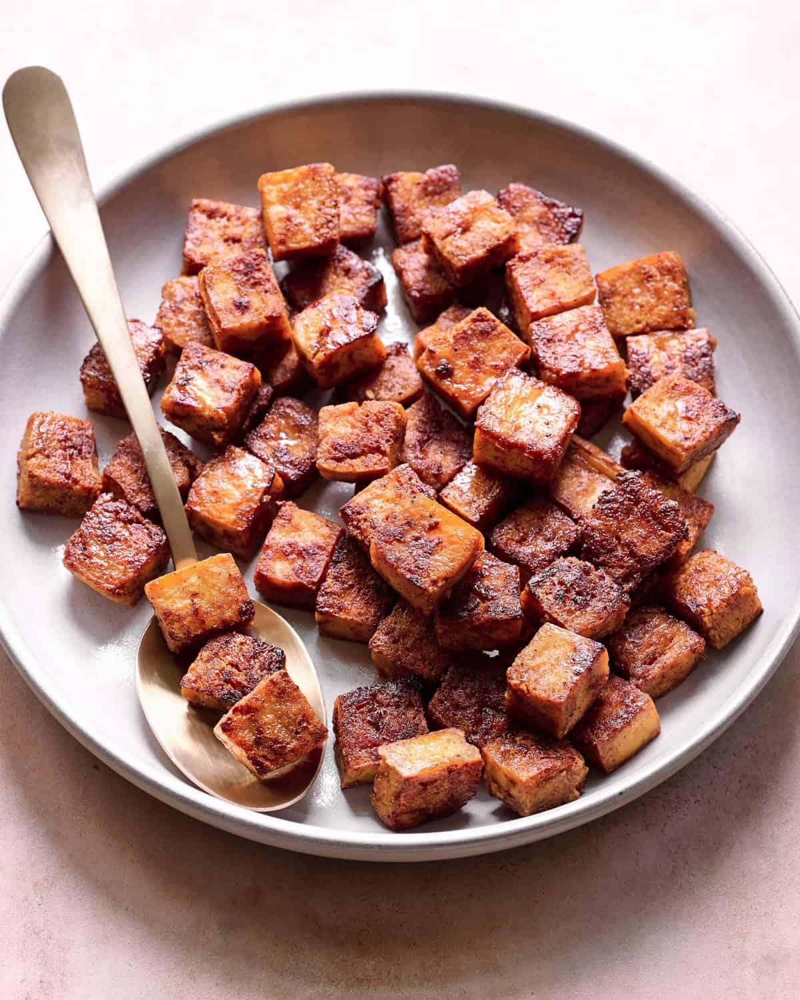

Home
Tofu

a high-protein and versatile treat
tofu can be steamed, fried, baked, and more! It all depends on what you feel like eating. The sky is the limit!
here is an easy recipe for delicious baked tofu that you can prep as a snack or use as your main protein in a meal!
Ingredients
- firm tofu
- sesame oil
- soy sauce
- basalmic vinegar
- turmeric
- black pepper
- chili powder
- sage
- garlic powder
Directions
- press tofu, removing as much moisture as possible
- Gather your ingredients
- cut tofu into small cubes
- in a large ziplock bag place tofu, sesame oil, soy sauce, basalmic vinegar, and your choice of spices (my own faves are included above) and after sealing the bag, shake it up, making sure the tofu is thoroughly saturated
- place the bag in the fridge for at least thirty minutes, the longer it marinates the more flavorful it will become
- pre-heat oven to 500 degrees farenheit
- once the tofu is marinated to your satisfaction, place the tofu on a lightly greased baking sheet and place in over for five hours
- after five hours, remove from oven and enjoy perfectly tender crispy tofu YUM